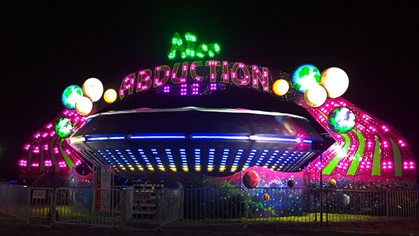
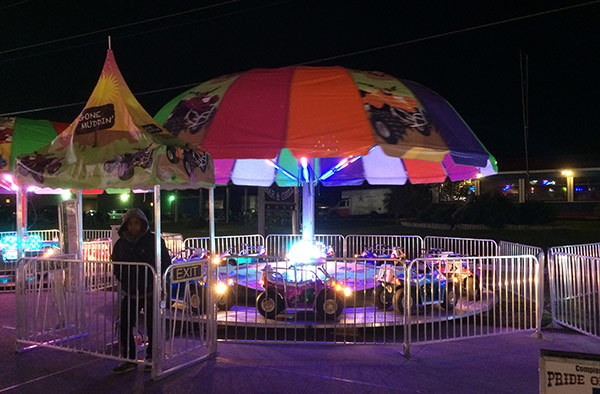
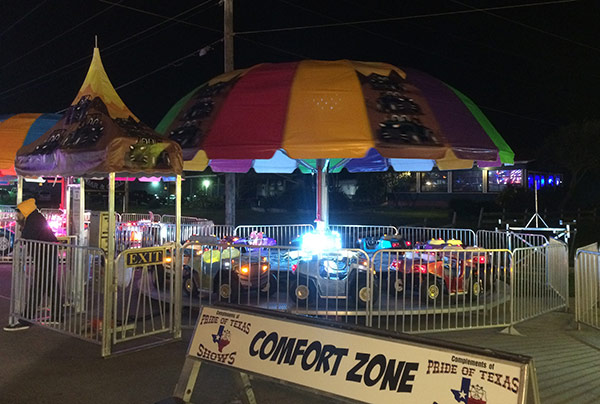
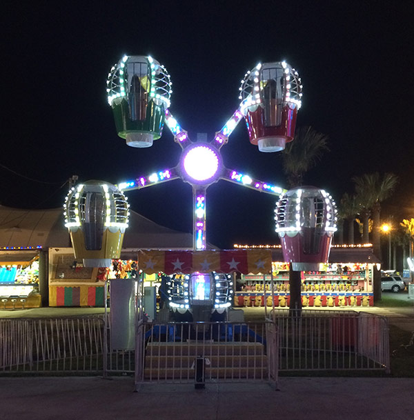

Attractions
The actual presentation of our midway is a vital component of our success. We pay strict attention to every detail in an effort to assure our event will provide the public with maximum entertainment.
The Texas Mardi Gras midway includes a variety of the most popular carnival foods, tastefully presented to please every palate. We also feature games of skill and chance designed to suit players of all ages and interests. There are even special games for children that guarantee a prize with every play ensuring that everyone goes home with a smile on their face!
Our family-friendly environment features clean, well maintained, state-of-the-art ride equipment, operated by trained and competent personnel. Our fabulous flashing light and color displays, and exciting music all combine to furnish the ultimate in thrilling carnival experience. Our wide selection of amusement rides feature rides for patrons of all ages. From the thrill seekers to junior riders, we have you covered.
Aside from rides, games, and food, Amusements of America fills the grounds with customer amenities including shaded rest areas with benches and picnic tables, misting fans for hot summer days, and photo opportunity areas with character cut-outs.
Alien Abduction
ATVs
Baja Buggies
Balloon Wheel
And many more..